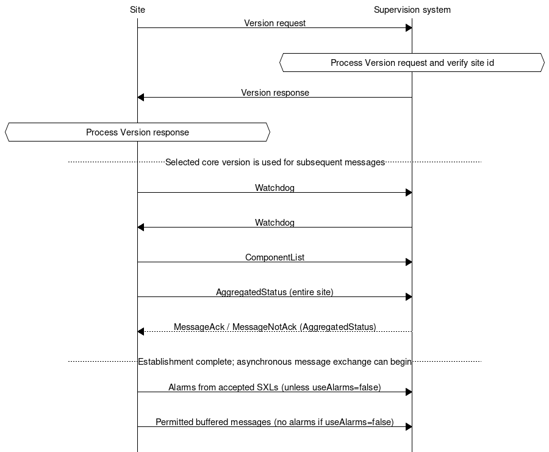
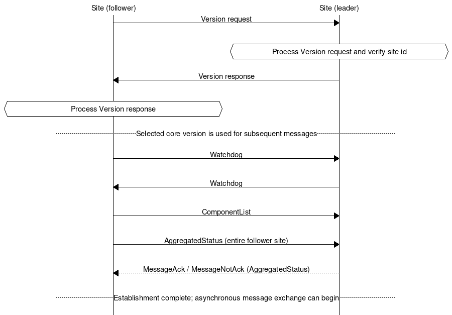
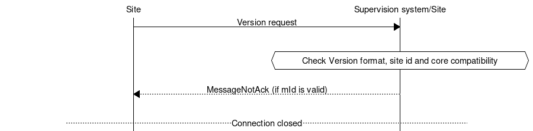

4.4. Transport of data
The message flow is different between different types of messages. Some message types are event driven and are sent without a request (push), while others are interaction driven, i.e. they sent in response to a request from a host system or other system (client-server).
To ensure that messages reach their destinations a message acknowledgment is sent for all messages. This gives the application a simple way to follow up on the message exchange.
To communicate between sites and supervision systems a pure TCP connection is used (TCP/IP), and the data sent is based on the JSon format, i.e. formatted text. The default port for RSMP is 12111.
Messages can be sent asynchronously, i.e. while the site or supervision system is waiting for an answer to a previously sent message it can can continue to send messages. The exception is during the first part of communication establishment (see section Communication establishment between sites and supervision system and Communication establishment between sites).
RSMP connections can be established:
Between site and supervision system. See communication establishment between sites and supervision system. The site needs to support multiple RSMP connections to different supervisors. See Multiple supervisors.
Directly between sites. See communication establishment between sites.
Note
Implementing support for communication between sites is not required unless otherwise stated in the SXL.
4.4.1. Multiple supervisors
Note
Implementing support for multiple supervisors is not required unless stated in the SXL.
Supervisor configuration:
It must be possible to configure the list of supervisors as part of the RSMP configuration in the site. In the configuration, supervisors are identified by their IP addresses or domain names.
It must be possible to configure whether to initiate the RSMP connection or to implement the socket server according to section Transport between site and supervision system.
Message IDs:
All messages must have unique message ids. Even when otherwise identical messages are sent to multiple supervisors, (e.g. an alarm or status update) different messages IDs must be used.
Message Acknowledgements:
Message acknowledgements are send only to the supervisor that send the original message.
Connection:
Connections to supervisor are handled in parallel, with messages processed in the order they arrive.
Depending on how core/SXL version are set in Version messages, the connections to supervisor can use different core/SXL versions.
Aggregated status:
Aggregated status is sent to all supervisors.
Status:
All supervisors can request, subscribe to and receive statuses.
Status subscriptions are handled separate per supervisor.
A status response is sent only to the supervisor that sent the initiating status request.
Commands:
All supervisors can send commands.
Commands from multiple supervisors are served on a first-come basis, without any concept of priority.
A command response is sent only to the supervisor that send the initiating command.
Alarms:
Alarms are sent to all supervisors, except those that set
useAlarmsto false in their Version response (see Alarm exchange).A supervisor may request, acknowledge or suspend/resume alarms only if
useAlarmsis true or omitted in its Version response.If an Alarm is blocked, suspended or acknowledged by one supervisor this affects all supervisors.
4.4.2. Security
RSMP Core does not provide communication security. A deployment can protect the TCP connection carrying RSMP by using an external mechanism such as TLS or a VPN. This protection does not change RSMP messages or protocol behaviour.
RSMP Core does not define requirements for selecting, configuring, or operating TLS, a VPN, or another external protection mechanism. See Security considerations.
4.4.3. Version negotiation
See RSMP/SXL Version for the format and content of Version messages.
When establishing RSMP communication, the initial message is a Version request message sent by the site. The supervisor responds with a Version response message.
The step attribute makes it easier to identify and validate messages without knowing
the sequence context, but is absent in earlier core versions. When step is absent, a Version message must be
identified as a request or response based on the communication sequence.
The site sends the request and the supervisor sends the response.
For site-to-site communication, the follower sends the request and the leader sends the response.
The principle of the message exchange is defined by the communication establishment (see Communication establishment between sites and supervision system and Communication establishment between sites).
Core and SXL versions are ordered by comparing their major, minor and patch numbers numerically, in that order.
After negotiation, communication establishment and subsequent message exchange must follow the selected core version, the SXLs in use and the negotiated communication options.
4.4.3.1. Core Version Compatibility
Version negotiation relies on the common structure of the RSMP array across core versions:
each entry is an object containing a vers attribute whose value is a core version string.
When receiving a Version message, the receiver must first read and validate
the RSMP array and select the latest core version supported by both parties.
If there is no common core version, see Communication rejection.
The remaining attributes must then be validated and interpreted according to that version. Attributes that are unknown to the selected core version must be ignored.
The supervisor must verify the siteId in the request against the expected site identity.
The supervisor sends a Version response message, which must be formatted according to the selected core version.
When core 3.3.0 is selected, the supervisorId in the response is informational;
the site does not compare it with an expected supervisor identity.
When the site receives the Version response, it must first read the RSMP array and select the latest core version
common to its original Version request and the Version response.
If there is no common core version, see Communication rejection.
The remaining attributes must then be validated and interpreted according to that version. Unknown attributes must be ignored.
If validation of the RSMP array or the remaining attributes fails in a Version request
or response, the receiver must follow Communication rejection.
Communication can only be established if the supervisor supports one of the core versions listed in the Version request sent by the site. It must be an exact match of major, minor and patch version.
If the supervisor determines that the core version cannot be matched, it must reject the connection according to Communication rejection.
A site and a supervisor can only communicate if the core versions are exactly the same, i.e.
major, minor and patch versions match.
The selected core version must be one of the versions offered in the site’s Version request.
For core 3.3.0, the RSMP array in the response contains only the selected version.
For earlier core versions, the response may list all versions supported by the supervisor,
including versions not offered by the site. The latest version common to the request and
response is selected.
4.4.3.2. SXL Version Compatibility
An SXL listed by the site can only be used if the supervisor supports the exact same version, with an exact match of major, minor and patch version.
For each SXL with status ok in the Version response, the version attribute must match
the version of that SXL in the Version request. Versions listed in supported for status
mismatch describe the supervisor’s supported versions and need not match the request.
The supported list is diagnostic only. No fallback to an older SXL version takes
place during this exchange, even if both parties support that version.
Communication can be established even if the supervisor supports none of the SXLs. In this case, no commands, statuses or alarms can be exchanged. But the ComponentList and AggregatedStatus will still be sent by the site.
If an SXL is not used, neither the site nor the supervisor may send messages defined in the SXL, and both must reject incoming messages defined in the SXL with a MessageNotAck (see Message acknowledgement).
A site must not reject a Version response based on status codes, as long as all status codes are valid.
4.4.3.3. Alarm exchange
The useAlarms attribute in the Version response applies to that connection only
and defaults to true when omitted.
If useAlarms is false, neither the site nor the supervisor may send any Alarm messages
on the connection. This applies to all values of aSp, including alarm requests,
acknowledgements and suspend/resume operations, as well as to notifications, responses,
initial alarms and buffered alarms.
If either party receives an Alarm message on such a connection, it must respond with a MessageNotAck.
4.4.4. Communication establishment between sites and supervision system
When establishing communication between sites and supervision system, messages are sent in the following order.
The Version exchange follows Version negotiation. The remaining sequence below applies when core version 3.3.0 is selected. If an earlier core version is selected, its communication establishment sequence applies after the Version exchange.
Message acknowledgements (see Message acknowledgement) are implicit in the following figure, except for the acknowledgement of AggregatedStatus.

The site sends a Version request message (see RSMP/SXL Version).
The supervisor processes the request according to Version negotiation and verifies the site id (see Communication rejection).
The supervisor sends a Version response message (see RSMP/SXL Version).
The site processes the response according to Version negotiation.
The selected core version is used in all further RSMP communication.
The site sends a Watchdog (according to section Watchdog)
The system sends a Watchdog (according to section Watchdog)
The site sends a ComponentList message (according to section ComponentList).
The site must send one AggregatedStatus message with the current status of the entire site (see Aggregated status message), even if no SXL is used on the connection. The site must wait for the supervisor’s MessageAck or MessageNotAck for this message. Either acknowledgement completes the communication establishment sequence. If rejected, the AggregatedStatus is discarded and communication continues.
The supervisor may start asynchronous message exchange after sending either acknowledgement, and the site may start after receiving it. Commands and statuses defined by accepted SXLs are allowed to be sent.
If
useAlarmsis true or omitted, all alarms defined by accepted SXLs (including active, inactive, suspended, unsuspended and acknowledged) are sent (according to section Alarm messages). IfuseAlarmsis false, this step is skipped (see Alarm exchange).Buffered messages in the equipment’s outgoing communication buffer are sent, including alarms, aggregated status and status updates. Buffered Alarm and StatusUpdate messages are sent only for accepted SXLs. Buffered alarms must not be sent on the connection if
useAlarmsis false.
The reason for sending all alarms including inactive ones is because alarms might otherwise incorrectly remain active in the supervision system if the alarm is reset and not saved in communication buffer if the equipment is restarted or replaced.
The reason for sending buffered alarms is for the supervision system to receive all historical alarm events. The buffered alarms can be distinguished from the current ones based on their older alarm timestamps. Any buffered alarm events that contains the exact same alarm event and timestamp as sent when sending all alarms should not be sent again.
The SXLs used on the connection are determined by Version negotiation.
4.4.5. Communication establishment between sites
When establishing communication directly between sites, one site acts as a leader and the other as a follower.
When establishing communication between sites, messages are sent in the following order.
The Version exchange follows Version negotiation. The remaining sequence below applies when core version 3.3.0 is selected. If an earlier core version is selected, its communication establishment sequence applies after the Version exchange.
Message acknowledgements (see Message acknowledgement) are implicit in the following figure, except for the acknowledgement of AggregatedStatus.

The follower site sends a Version request message (see RSMP/SXL Version).
The leader site processes the request according to Version negotiation and verifies the site id (see Communication rejection).
The leader site sends a Version response message (see RSMP/SXL Version).
The follower site processes the response according to Version negotiation.
The selected core version is used in all further RSMP communication.
The follower site sends Watchdog (according to section Watchdog)
The leader site sends Watchdog (according to section Watchdog)
The follower site sends a ComponentList message (according to section ComponentList).
The follower site must send one AggregatedStatus message with the current status of the entire follower site (see Aggregated status message), even if no SXL is used on the connection. The follower site must wait for the leader site’s MessageAck or MessageNotAck for this message. Either acknowledgement completes the communication establishment sequence. If rejected, the AggregatedStatus is discarded and communication continues.
The leader site may start asynchronous message exchange after sending either acknowledgement, and the follower site may start after receiving it. Commands and statuses defined by accepted SXLs are allowed to be sent.
For communication between sites the following applies:
The SXLs used are selected from those offered by the follower site
The site id (siteId) which is sent in RSMP / SXL version is the follower site’s site id
The leader site verifies the follower site’s site id against the expected site id (see Communication rejection).
For messages that refer to a component, the component id is the follower site’s component id.
Watchdog messages does not adjust the clock. See section Watchdog.
Alarm messages must not be exchanged, regardless of
useAlarms(see Alarm exchange).No communication buffer exist
Note
Please note that it’s the leader site that connects the the follower site, but it’s also the leader site that requests commands and statuses. This is different to how the RSMP connection between sites and supervision system works.
4.4.6. Communication rejection
Version requests and responses are validated according to Version negotiation. The supervisor verifies the site id in the request. For site-to-site communication, the leader site verifies the follower site’s site id.
If a Version request or response fails validation, the site id does not match, or there is no common core version, the receiver must:
Stop the communication establishment sequence.
If the message contains a valid
mId, send a MessageNotAck withoMIdset to that id and reason (rea) set to the cause of rejection. For instance,RSMP versions [3.1.5] requested, but only [3.1.1,3.1.2,3.1.3,3.1.4] supportedIfmIdis missing or invalid, no MessageNotAck is sent.Close the connection, whether or not a MessageNotAck could be sent.

It is not allowed to disconnect for any other circumstance than the Version negotiation failures described above or missing message acknowledgement unless there is a communication disruption.
4.4.7. Communication disruption
In the event of an communication disruption the following principles applies:
If the equipment supports buffering of status messages, the status subscriptions remains active regardless of communication disruption and the status updates are stored in the equipment’s outgoing communication buffer.
Active subscriptions to status messages which does not support buffering ceases if communication disruption occurs.
Active subscriptions to status messages ceases if the equipment restarts.
Once communication is restored all the buffered messages are sent according to the communication establishment sequence.
When sending buffered status messages, the
qfield should be set tooldThe communication buffer is stored and sent using the FIFO principle.
In the event of communications failure or power outage the contents of the outgoing communication buffer must not be lost.
The internal communication buffer of the device must at a minimum be sized to be able to store 10000 messages.
The following message types should be buffered in the equipment’s outgoing communication buffer in the event of an communication disruption.
Message type |
Buffered during communication outage |
|---|---|
Alarm messages |
Yes |
Aggregated status |
Yes |
Status messages |
Configurable |
Command messages |
No |
Version messages |
No |
Watchdog messages |
No |
MessageAck |
No |
The following configuration options should exist at the site:
It should be possible to configure which status messages that will be buffered during communication outage
The site should try to reconnect to the supervision system/other site during communications failure (yes/no). This configuration option should be activated by default unless anything else is agreed upon.
The reconnect interval should be configurable. The default value should be 10 seconds.
4.4.8. Wrapping of packets
Both Json and XML packets can be tricky to decode unless one always know that the packet is complete. Json lacks an end tag and an XML end tag may be embedded in the text source. In order to reliably detect the end of a packet one must therefore make an own parser of perform tricks in the code, which is not very good.
Both Json and XML could contain tab characters (0x09), CR (0x0d) and LF (0x0a). If the packets are serialized using .NET those special characters does not exist. Therefore it is a good practice to use formfeed (0x0c), e.g. ’f’ in C/C++/C#. Formfeed won’t be embedded in the packets so the parser only needs to search the incoming buffer for 0x0c and deal with every packet.
Example of wrapping of a packet:
{
"mType": "rSMsg",
"type": "Alarm",
"mId": "d2e9a9a1-a082-44f5-b4e0-6c9233-a204c",
"ntsOId": "",
"xNId": "",
"cId": "AB+81102=881WA001",
"aCId": "A001",
"xACId": "Lamp error #14",
"xNACId": "3052",
"aSp": "acknowledge",
"ack": "Acknowledged",
"aS": "active",
"sS", "notSuspended",
"aTs": "2009-10-02T14:34:34.345Z",
"cat": "D",
"pri": "2",
"rvs": [
{
"n": "color",
"v": "red"
}]
}<0x0c>
JSon code 1: An RSMP message with wrapping
The characters between <> is the bytes binary content in hex (ASCII code), ex <0x0c> is ASCII code 12, e.g. FF (formfeed).
The following principles applies:
All packets must be ended with a FF (formeed). This includes message acknowledgement (see section Message acknowledgement). For example if NotAck is used as a consequence for core version mismatch during communication establishment
Several consecutive FF (formeed) must not be sent, but must be handled
FF (formeed) in the beginning of the data exchange (after connection establishment) must not be sent, but must be handled
4.4.9. Transport between site and supervision system
By default the following applies:
The supervision system implements a socket server and waits for the site to connect
The site initiates the connection to the supervision system
If the communication were to fail it is the site’s responsibility to reconnect
Optionally the opposite can be used:
The site implements a socket server and waits for the supervision system to connect
The supervision system initiates the connection to the site
If the communication were to fail it is the supervision system’s responsibility to reconnect
In both cases it is the supervision system which has the ability to request commands, statuses (with optional subscription) and alarms.
Note
Regardless who implements the socket server and client, the message flow is unaffected
4.4.10. Transport between sites
One site acts as leader and the other site(s) as followers. The leader can request commands, statuses (with optional subscription) and alarms to the follower site(s). It is the leader one who connects. This is different to how the RSMP connection between sites and supervision system works.
The follower site(s) implements a socket server and waits for the leader site to connect
The leader site initiates the connection to the follower site(s)
The leader can request commands, statuses (with optional subscription)
If the communication were to fail it is the leader site’s responsibility to reconnect